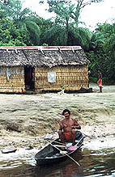

|  |  |  |  |  |
YOU CHOSE ...
'Quilombo' refers to small remote communities in Brazil established by escaped African slaves.
CONTINUE
 ORIGIN OF QUILOMBOS ON THE TROMBETAS RIVER*
1780 - Cocoa bean cultivation and livestock raising begins near the cities of Santarém and Óbidos. African slave labor used. Quilombo formation seems to have begun in first decades of expansion of cocoa bean cultivation.
1812 - Disciplinary expedition destroyed the Inferno and Cipotema Quilombos at the source of the Curuá River.
1821 - A 'Carafuz' (mixture of African and Indeginous) slave by name of Atanasio leads 40 companions to organize a new Quilombo on the banks of Trombetas River with remaining descendents of destroyed Inferno and Cipotema Quilombos = Mocambo Lake. Eventually grows to 2000 members.
1822-23 - Disciplinary expedition against runaway slaves destroys Trombetas Quilombo and arrests Atanasio. Following years were peaceful. Quilombos maintained commercial relation with inhabitants of Obidos cultivating tobacco and gathering of natural substances.
1827 - Trade with the Quilombolas is profitable but increasing numbers of runaway slaves worries plantation owners. So, Santarém, Óbidos and Alenquer mobilized 100+ men who advance up the Trombetas as far as Curuá River and destroy Quilombos there.
1835 - During the Cabanagem Revolt, slaves sided with the revolutionists, then reorganized and founded a settlement called 'Cidade Maravilha' (Marvelous City).
1852 - Hearing of a future disciplinary expedition, Quilombolas abandon 'Marvelous City,' go up river to establish the Quilombo at Campixe.
1855 - Province Governor Sebastiao do Rêgo Barros orders expedition against the Quilombos of Trombetas. Quilombolas receive warning and flee up river.
1868 - New expedition leaves Santarém with intention of 'dominating the Negroes of the Trombetas;' results were uncertain.
1870 - On 31 October 1870, Canon Manuel José de Siqueira Mendes, as interim Governor of the then Province of Pará, signed Law No. 653, authorizing the destruction of all Quilombos. Based on this law, new expeditions were organized.
1876 - Last recorded expedition occurred in the summer of 1876 and was directed against a Quilombo situated on the Curuá River, resulting in its destruction.
1888 - The expeditions against Quilomos of the Trombetas and Curuá Rivers continued until slavery was abolished on 13 May 1888.
*This information is taken from an article by Lúcia M. M. de Andrade called "The Quilombos of the Trombetas River Basin: Brief History." The paper was conceived to provide information for the work of the Association of Remaining Descendants of Quilombola Communities of the Municipality of Oriximiná (ARQMO).